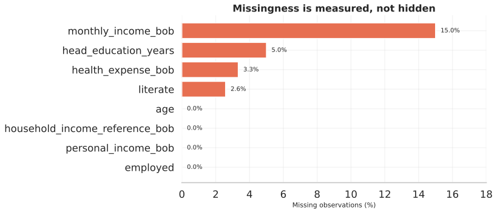
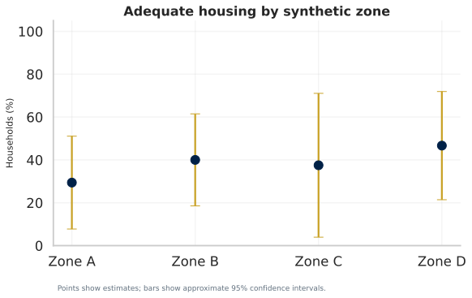
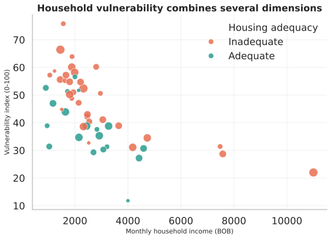
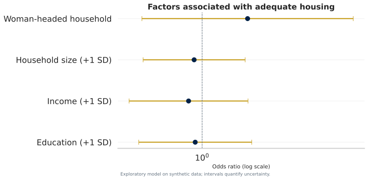

Socioeconomic and Housing Conditions in Rural Bolivia: A Privacy-First Reproducible Survey Analysis
Abstract
Background: Household surveys can inform housing and social policy, but public reproducibility may conflict with respondent confidentiality. Objective: To demonstrate a privacy-first, reproducible workflow for analysing housing adequacy and socioeconomic vulnerability. Methods: We generated 60 synthetic households and 271 synthetic members, validated referential integrity and disclosure constraints, quantified missingness, calculated weighted descriptive estimates with 2,000-resample bootstrap intervals, and fitted a parsimonious logistic regression. Results: Weighted adequate housing was 37.9% (95% bootstrap interval 26.7%-51.7%). Synthetic median monthly income was BOB 2210, with 15.0% missing. All exploratory regression intervals crossed the null value, appropriately signalling limited precision. Conclusions: Reproducibility does not require publication of identifiable microdata. A strong analytical product combines privacy controls, explicit estimands, uncertainty, reproducible code and restrained interpretation.
Keywords: household survey; housing adequacy; reproducible research; synthetic data; missing data; logistic regression; research ethics
1. Introduction
Housing is multidimensional: construction materials, basic services, crowding and household resources jointly shape wellbeing. Survey analysis often compresses these dimensions into percentages without reporting denominators, uncertainty, missingness or the assumptions behind composite measures. These omissions weaken both scientific interpretation and operational decision-making.
A second challenge is disclosure. Household microdata may combine names, ages, occupations, income, health information and property characteristics. Removing a name column is insufficient when rare combinations can re-identify respondents. This project therefore treats privacy architecture as part of statistical quality rather than as an administrative appendix.
1.1 Research questions
- How can adequate housing be defined transparently from multiple components?
- Which socioeconomic characteristics are associated with adequate housing in a small cross-sectional demonstration?
- How should missingness and sampling uncertainty be communicated?
- Can a public portfolio remain reproducible without exposing confidential source records?
2. Methods
2.1 Study design and reporting framework
The paper follows the Introduction-Methods-Results-Discussion structure and is mapped to the STROBE checklist for cross-sectional studies [1,2]. It is a methodological demonstration, not a registered observational study.
2.2 Data generation and units of analysis
A fixed pseudorandom seed generated 60 households and 271 nested members. Aggregate zones are fictional. No value was copied, perturbed or sampled from a real respondent. Household and person denominators are kept separate throughout.
2.3 Privacy and quality controls
Automated tests reject direct-identifier columns, duplicate identifiers, orphaned member records, invalid binary outcomes and impossible ages. Public file rules exclude SPSS, legacy Word and private raw-data directories from version control.
2.4 Estimands and uncertainty
For survey weights wi and outcome yi, the weighted mean is:
The 95% interval uses the 2.5th and 97.5th percentiles of 2,000 household bootstrap estimates:
2.5 Housing and vulnerability measures
The housing score is the unweighted share of six documented components: electricity, improved water, improved sanitation, quality walls, quality floor and absence of severe crowding. Adequate housing requires a score of at least two thirds. The vulnerability index combines housing, head education and capped income:
2.6 Exploratory model
A logistic generalised linear model estimates conditional associations with adequate housing:
Education, log income and household size are standardised. Missing education and income are median-filled for this demonstration; a substantive study should use design-aware multiple imputation and sensitivity analysis [5]. No coefficient is interpreted causally.
3. Results
| Characteristic | Estimate |
|---|---|
| Households, n | 60 |
| Household members, n | 271 |
| Household size, median (IQR) | 5.0 (3.0-6.0) |
| Age of household head, mean (SD) | 47.0 (11.1) |
| Woman-headed households, % | 36.7 |
| Education of head, median years (IQR) | 7.0 (5.0-9.0) |
| Monthly income, median BOB (IQR) | 2210 (1690-3005) |
| Income missing, % | 15.0 |
| Adequate housing, weighted % (95% CI) | 37.9 (26.7-51.7) |
| Vulnerability index, mean (SD) | 44.6 (12.0) |

3.1 Housing adequacy and services
The weighted adequate-housing estimate was 37.9% (95% bootstrap interval 26.7%-51.7%). Wide zone-specific intervals reflect the small number of households and discourage unstable rankings.

3.2 Socioeconomic patterning
Median synthetic monthly household income was BOB 2210. The mean vulnerability index was 44.6 on a 0-100 scale. Correlations describe co-movement only and do not establish pathways of causation.

3.3 Exploratory regression
| Predictor | Odds ratio | 95% CI | p-value |
|---|---|---|---|
| Education (+1 SD) | 0.93 | 0.51-1.69 | 0.811 |
| Log income (+1 SD) | 0.87 | 0.46-1.63 | 0.655 |
| Household size (+1 SD) | 0.92 | 0.53-1.58 | 0.759 |
| Woman-headed household | 1.62 | 0.53-4.99 | 0.399 |

4. Discussion
This demonstration shows that a portfolio can display advanced analytical competence without overstating evidence. The main contribution is the integration of disclosure controls, explicit denominators, uncertainty, documented measurement and automated reproduction. The wide intervals are analytically useful: they reveal why complex machine learning and detailed subgroup ranking would be inappropriate for a 60-household study.
For a real survey, scientific value would depend on information that cannot be reconstructed from the data alone: target population, sampling frame, selection probabilities, field dates, non-response process, questionnaire, interviewer procedures and ethics approval. These elements should be documented before substantive re-analysis.
5. Limitations
- Synthetic observations cannot validate or reproduce the original empirical findings.
- The demonstration weights do not represent a real sampling design.
- The housing threshold and vulnerability coefficients require substantive validation.
- Median filling understates missing-data uncertainty and is used only to keep the example transparent.
- Binary gender measurement is an artificial simplification.
- Cross-sectional associations cannot identify causal effects.
6. Conclusion
Strong research communication is not the accumulation of charts or equations. It is the alignment of a meaningful question, appropriate estimand, transparent method, uncertainty, ethical data handling and restrained conclusion. This workflow provides a publishable foundation once authorised, anonymised source data and a complete survey design are available.
Declarations
Ethics and privacy: No real participant record is processed by the public pipeline. Data availability: Synthetic CSV files and their generator are included. Code availability: The complete pipeline, tests and dependency lockfile accompany this paper. Funding: No external funding is declared for this demonstration. Competing interests: None declared. Author contribution: Monica Cueto Tapia: conceptualisation, methodology, analysis design, interpretation and presentation.
References
- von Elm E, et al. The Strengthening the Reporting of Observational Studies in Epidemiology (STROBE) statement. Lancet. 2007;370:1453-1457. doi:10.1016/S0140-6736(07)61602-X.
- STROBE Initiative. Checklist for cross-sectional studies. Official checklist.
- Lohr SL. Sampling: Design and Analysis. 3rd ed. Chapman and Hall/CRC; 2021.
- Peng RD. Reproducible research in computational science. Science. 2011;334:1226-1227. doi:10.1126/science.1213847.
- Little RJA, Rubin DB. Statistical Analysis with Missing Data. 3rd ed. Wiley; 2019.
- Wickham H. Tidy data. Journal of Statistical Software. 2014;59:1-23. doi:10.18637/jss.v059.i10.